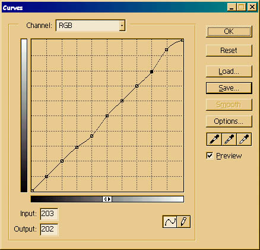
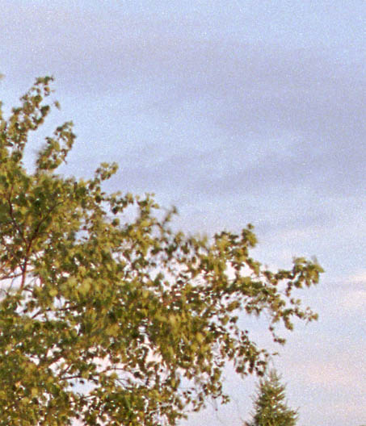
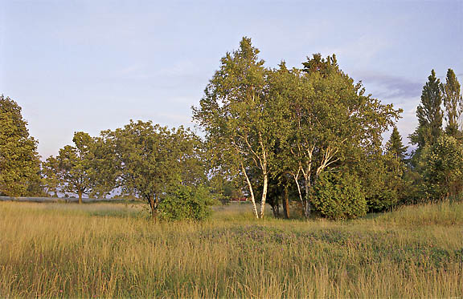

|
LCE Mark II and Mark IIIVersion 1.0, ©2004 by Dale Cotton, all rights reserved. We already have one excellent approach to local contrast enhancement based on USM, thunk up by Thomas Knoll and presented in a tutorial on Luminous Landscape. But the more tools one has in one's kit the better, so here are two more ways to exaggerate local contrast:
Fig 1. 156-08 before. Fig 1, as we see it fresh out of the film scanner, is chock full of subtle, fairly high-key / pastel hues. I wanted to preserve those colours and the airy feeling they create, but I also wanted to differentiate between similarly-toned clouds and sky as well as add contrast to the muddy regions in the field of dead grass.
Fig 2. Crop from Fig 1. LCE with Curves Fig 3. Dippy curve. It is useful to apply control points at each of the 9 grid line intersections then save this for future use. One such use is to change contrast in a specific region of the tone curve. In Fig 3, I've combined two such local curves: one below the mid point, which will primarily affect the field and trees, and one at the top, which will primarily affect the sky, bringing out the clouds. I chose the locations for these control points by clicking on various regions of the image while watching to see where the RGB value for each click fell on the "curve" diagonal. I particularly did not want to lose detail in the already dangerously dark shadows under the trees, so I left the lowest two control points strictly alone. Any curve that has more than one control point compresses values on a down-slope while expanding values on an up-slope, so it is best to apply twisty curves like this while still in 16-bit mode. This results in the following change in local contrast:  Fig 4. 156-08 crop after the above curve is applied. LCE with Apply Image
Fig 5. Apply burn. Another nifty tool with lots of possibilities for modifying colour and contrast is Apply Image under the Image menu. Essentially, this oft-overlooked control does the same task as duplicating a layer then applying a blend mode to the upper duplicate. Here we will use it in its simplest form and apply a small amount of Color Burn. In practice, I applied different amounts of burn to the sky and to the land.
Fig 6. 156-08 crop after applying burn. Don't forget you can use selections and Edit->Fade... to control where and how much you apply these effects. Here's the final edit of this image. The above techniques were used, as well as an S-curve for global contrast and a slight boost to the red channel in the non-sky areas.  Fig 7. 156-08 after adjustments. |